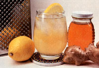
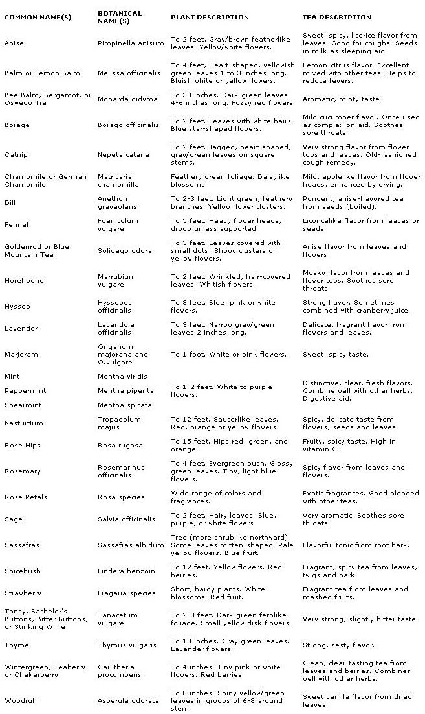

From Mother No. 45
Here's healthful way to beat the heat this summer, or to ease long winter evenings.
When it comes to out-and-out satisfying flavor, herb teas are as far removed from ordinary orange pekoe as homebaked bread is from the store-bought kind. And for sheer summer refreshment power, nothing compares to a tall, iced glass of herbal brew!
My favorite teas are made with alfalfa, lemon balm, mint (all kinds), rose hips, rosemary, and thyme-but you can make zesty, mineral-rich teas from almost any edible herb, wild or cultivated. (Note: The key word here is edible. Do NOT brew a tea from any plant that you cannot positively identify as being nontoxic.)
Herbs for tea are not hard to grow, and nearly all mail-order seed companies and local garden stores offer a good selection of different kinds. Most types do well in a sandy loam fortified with a small amount of compost (I use a 2:4:1 mix of loam, sand, and sifted compost). If you decide to grow some or all of your herbs in pots indoors, as I do, you'll want to make sure those containers have holes in their bottoms for good drainage. Or, if you prefer, you can produce "tea fixin's" right in your vegetable garden. (I've successfully raised thyme, lemon balm, summer savory, catnip, and parsley this way.) Just be sure to plant perennial varieties well off to one side so that-come fall-you won't forget and plow them under.
Many tea ingredients can be foraged. Here in western Montana, for instance, I go up into the hills every spring to gather wild strawberry, raspberry, and huckleberry leaves-each type adds a delightful tanginess to otherwise-mild tea blends. I also forage clover blossoms and alfalfa (both can be found in fields and along side roads) and wild mint (which often grows along ditch banks). If you don't know how to identify these or other wild-tea plants, consult a field book or ask an old-timer in your area to show you what's what.
If you're like me, you'll probably want to harvest a large quantity of herbs all at once and dry the cache for future use. Here's the procedure I use:
1. Gather in midmorning, after most of the dew has evaporated. (If the leaves are dusty, wash them in cold water and drain or shake off excess moisture.)
2. Set the vegetation in a dry, warm place, out of direct sunlight. I dry my tea ingredients in the attic during the summer months, but a drying box or a spot near a window would do just as well. The important thing is to lay the herbage out one layer deep on a clean paper towel or a drying screen. Don't pile the herbs up . . . the ones on the bottom might become moldy. To protect the plants from dust, lay more paper towels on top of them.
3. Allow the herbs to dry for about ten days (longer, if they still feel moist). Then store them in tightly closed jars.
|
 |
 |
|